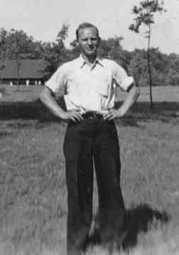

|
|
|
|
|
|
 Leonard John WEISS (1906-1947) |
Leonard John WEISS
• He appeared in the 1910 census on 27 Apr 1910 in McKeesport, Allegheny, PA. 6 • He appeared in the 1920 census on 5 Jan 1920 in McKeesport, Allegheny, PA. 7 • He appeared in the 1930 census on 14 Apr 1930 in McKeesport, Allegheny, PA. 8 • He appeared in the 1940 census on 9 Apr 1940 in McKeesport, Allegheny, PA. 9 • He was employed as a steelworker 1 at. Leonard married Laura Gertrude ZOERB, daughter of Jacob John ZOERB and Lena DONET, on 24 Nov 1928.1 2 (Laura Gertrude ZOERB was born on 12 Jul 1907 in McKeesport, Allegheny, PA,1 2 10 died on 23 Dec 1997 in Pittsburgh, Allegheny, PA 1 10 and was buried on 27 Dec 1997 in McKeesport-Versailles Cemetery, McKeesport, Allegheny, PA 11.) |
1 Thomas Hoey, Oral Interview of Ruth Weiss Yalenty (Pittsburgh, PA).
2 Katherine Zoerb Sabol, Descendant Chart of Jacob John Zoerb (McKeesport, PA,).
3 Commonwealth of Pennsylvania, Department of Health, Bureau of Vital Statistics, Pennsylvania Death Certificates, 1906-1970 (Harrisburg, PA (via Ancestry.com)), Leonard J. Weiss (filed 6 Feb 1947).
4 Thomas Hoey, Cemetery Headstone, Mckeesport-Versailles Cemetery (Mckeesport, PA).
5 McKeesport Daily News, Leonard Weiss Obituary (McKeesport, PA, 4 Feb 1947).
6 Pennsylvania, Allegheny County, 1910 U.S. Census, Population Schedule (Washington, D.C., National Archives and Records Administration), ED 135, Sheet 10, Line 94.
7 Pennsylvania, Allegheny County, 1920 U.S. Census, Population Schedule (Washington, D.C., National Archives and Records Administration), ED 223, Sheet 1, Line 66.
8 Pennsylvania, Allegheny County, 1930 U.S. Census, Population Schedule (Washington, D.C., National Archives and Records Administration), ED 2-683, Sheet 26, Line 98.
9 Pennsylvania, Allegheny County, 1940 U.S. Census, Population Schedule (Washington, D.C., National Archives and Records Administration), ED 2-299, Sheet 5, Line 6.
10 Social Security Administration, Death Master File (http://www.ancestry.com/search/rectype/vital/ssdi/main.htm).
11 Thomas Hoey, Firsthand Knowledge.